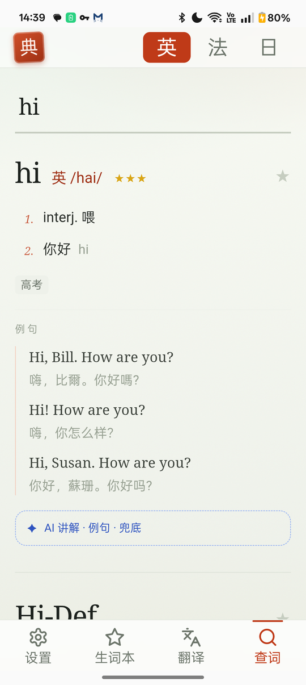
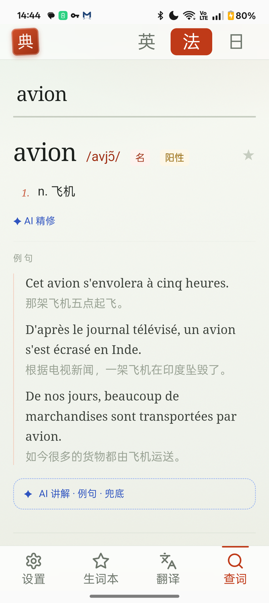
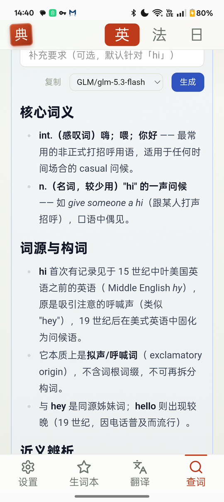
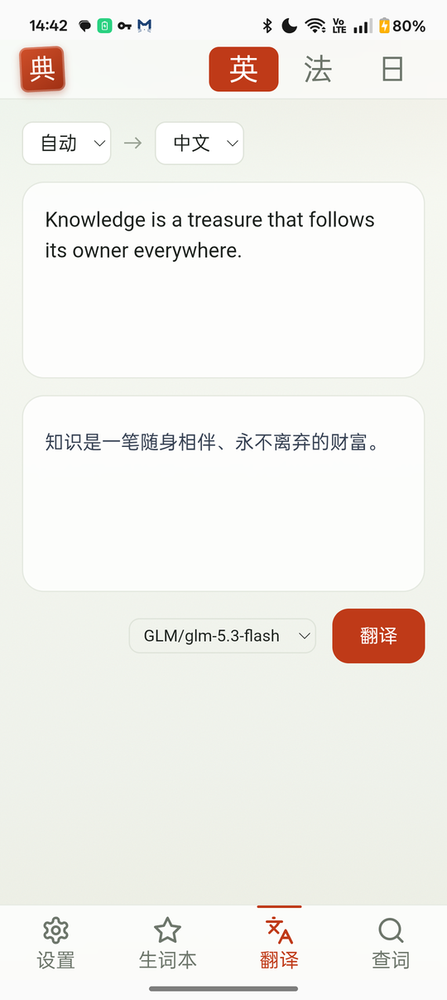

英语 77 万词头带音标与词频；法语带音标、词性、阴阳性与完整屈折变化；日语带汉字表记、假名读音与变形还原（食べた → 食べる）。输入中文也能反查外文词。
全部词典数据随应用安装，查词不需要网络。生词本、历史、设置都只存在你的设备上。
例句来自 Tatoeba 开源句库，配人工校对的中文翻译，不是机器拼凑的造句。
自带 API Key 即可启用深度讲解、例句生成与释义补全；不配置则完全不影响使用，Key 只存在本机。
无广告、无开屏、无账号体系、无统计埋点。纸墨排印，只留查词这一件事。
应用源码与词典数据管道全部公开，数据源授权逐一署名，任何人都可以复核。
无账号体系、无统计埋点、无广告追踪；查词完全在本地完成，生词与设置不出设备。 可选的 AI 功能只在你主动使用时，把对应文本发送到你自己配置的服务地址。
完整条款见隐私政策。